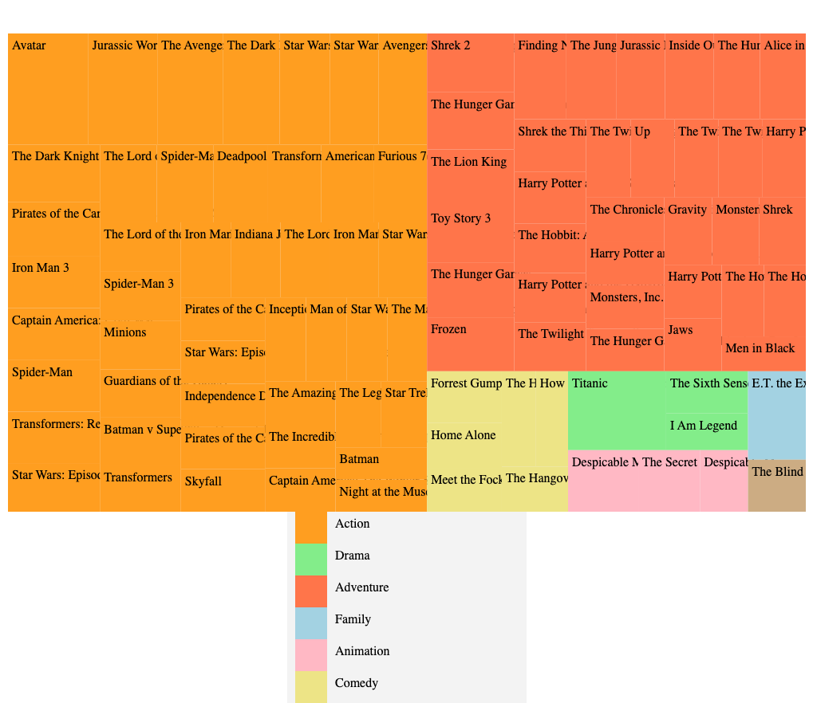
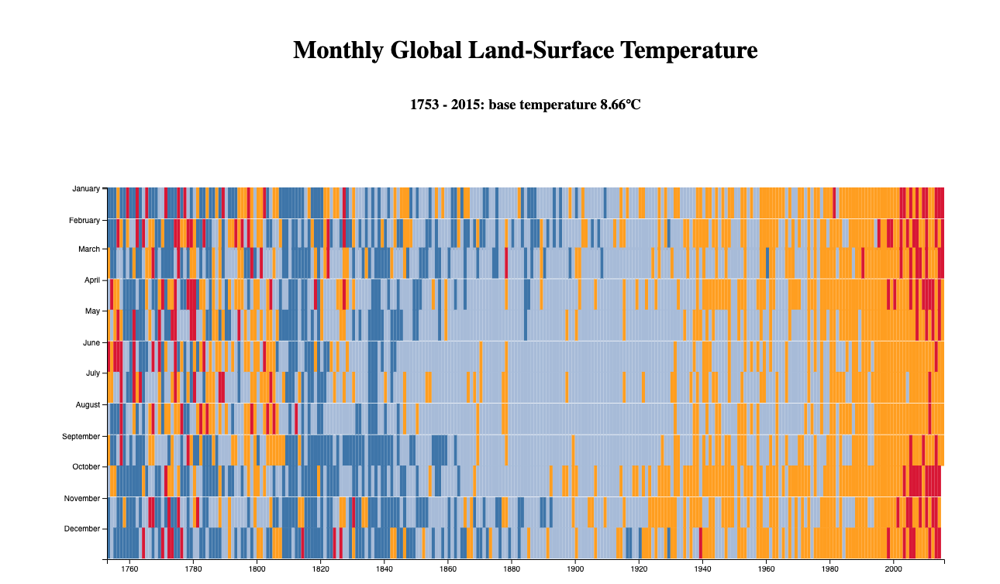
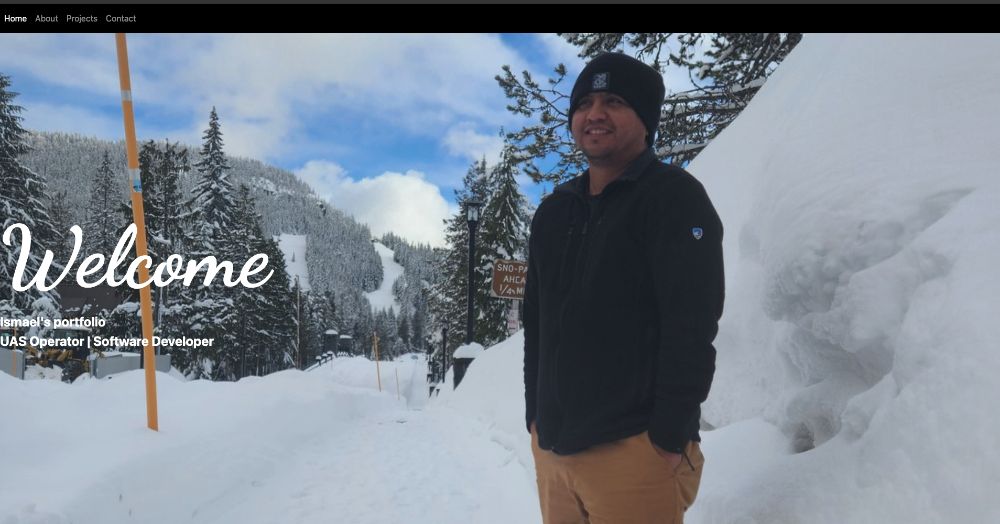

Embark on a journey through the dynamic world of software
development with Ismael Galarza. A North Carolina native and an
Army veteran with 15 years of unparalleled experience in unmanned
aircraft systems, Ismael's path is one of continuous growth and
innovation.
Having transitioned from his esteemed service in the U.S. Army
National Guard, Ismael now stands as an aspiring software
developer, his passion for crafting digital solutions driving his
every endeavor.
At AeroVironment Inc., Ismael's expertise shines as he holds the
position of a Field Service Representative (FSR), specializing in
the intricacies of the Jump 20 Vertical take-off and landing
airframe (VTOL). This role seamlessly blends his operational
finesse with his mechanical dexterity, showcasing his versatility
in diverse domains.
Beyond his technical pursuits, Ismael is a dedicated family man,
cherishing his role as a husband and father to three wonderful
children. His interests span the outdoors, from the tranquility of
fishing to the thrill of hunting, as well as exploring new
destinations and savoring unique cuisines.
An exceptional chapter in Ismael's journey was marked by the
feature of his platoon's deployment experiences in the esteemed
"Coffee or Die" article
"Eyes in the Sky: The Drones of Valkyrie Platoon"
during 2019-2020 by
Kevin Knodell
. This snapshot encapsulates his dedication, camaraderie, and
indomitable spirit.
As you navigate through this portfolio, glimpse into
Ismael's software development projects, accomplishments, and the
ever-evolving trajectory that defines his pursuit of excellence.
Join him in embracing the boundless possibilities that the world
of software holds.
Projects

Rock, Paper, Scissors Game
A simple Rock, Paper, and Scissor Game made with HTML, CSS, and
Javascript. I created this project while learning at the Odin
Project Web Development course.

Data-visualization Tree Map
Freecodecamp data visualization using Javascript, HTML, CSS, and
D3.js. Used Json to retrieve Movie data.

Heat Map
This project was a course work for Freecodecamp. it was created
using HTML, CSS, Javascript and d3.js library.

Ismael's portfolio
This website was created in HTML, CSS, javascript, and Bootstrap
5 as a self improvement project.